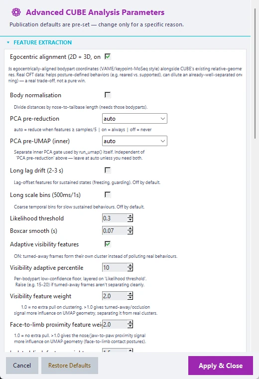
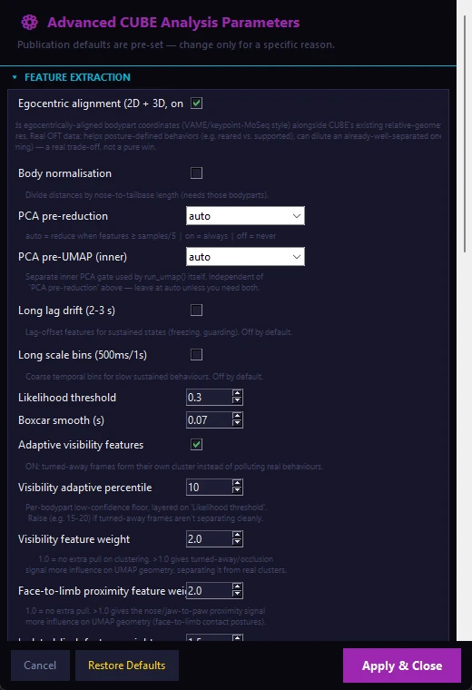

Open it from: Advanced CUBE Analysis... in the main window. The window is organised in sections, and the defaults shown here are the values the app uses when you press Restore Defaults. The defaults are chosen to work for most datasets, so change a setting only for a specific reason. Settings for arena tracing and paradigms are in their own window, Environments, Objects, Paradigms... (see below).


Feature Extraction#
| Setting | Default | What it does |
|---|---|---|
| Egocentric alignment (2D and 3D) | On | Adds animal-centred body-point coordinates next to the standard geometry features. It helps posture-defined behaviours (for example reared versus supported) and can dilute an already well-separated one (for example grooming), so it is a trade-off |
| Body normalisation | Off | Divides distances by the nose-to-tail-base length (needs both body points) |
| PCA pre-reduction | auto | auto reduces the features when their number reaches one fifth of the number of samples; on always; off never |
| PCA pre-UMAP (inner) | auto | A separate PCA step used by UMAP itself. Leave on auto unless you need both |
| Long lag drift (2 to 3 s) | Off | Lagged features for sustained states such as freezing or guarding |
| Long scale bins (500 ms and 1 s) | Off | Coarse time bins for slow, sustained behaviours |
| Likelihood threshold | 0.30 | Frames below this DLC likelihood are filled in from their neighbours |
| Boxcar smooth (s) | 0.07 | Length of the moving average applied to the trajectories |
| Adaptive visibility features | On | Adds per-body-point confidence features so turned-away or occluded bins form their own cluster instead of polluting real behaviours |
| Visibility adaptive percentile | 10 | Per-body-point confidence floor, on top of the likelihood threshold. Raise it to 15 to 20 if turned-away frames do not separate cleanly |
| Visibility feature weight | 2.0 | How strongly the visibility signal shapes the embedding (1.0 means no extra weight) |
| Face-to-limb proximity feature weight | 2.0 | How strongly nose or jaw to paw proximity shapes the embedding (1.0 means no extra weight) |
| Isolated-limb feature weight | 1.5 | How strongly a single raised limb and its sustained hold shape the embedding (1.0 means no extra weight) |
| Exclude turned-away frames from clustering | On | Excludes turned-away bins from training and labels them "Turned Away" |
| Turned-away confidence threshold | 0.5 | The share of face points with low confidence that flags a bin as turned away. Raise it to make detection more conservative |
| Auto-flag impure clusters | Off | Folds low-silhouette clusters into a separate "Low-Quality Cluster" label. Off by default because it can wrongly flag a real behaviour; check the example clips before trusting a flag |
| Impure-cluster silhouette threshold | 0 | 0 reuses the split silhouette threshold below (0.20) |
| Body-Region Weights (optional)... | Uniform | Opens the panel described under Step 3 |
Two more turned-away settings have no control in the window and can be set in the saved session's engine configuration: the minimum window length (turned_away_min_window_s, default 1.0 s) and the merge gap (turned_away_merge_gap_s, default 0.5 s).
UMAP Embedding#
| Setting | Default | What it does |
|---|---|---|
| Full-data threshold | 10,000 | Below this number of bins all bins are used; larger recordings are subsampled |
| Train fraction | 0.75 | The share of bins used to fit UMAP when subsampling |
| Subsample strategy | iid | block uses contiguous blocks, which is better for short or rare behaviours (opt-in) |
| Block length (bins, block mode) | 17 | Length of each block |
| n_neighbors | 0 (auto) | 0 scales the neighbourhood with the recording length. The B-SOiD reference value is 60 |
| n_components | 3 | Dimensions of the embedding |
| min_dist | 0.10 | Point packing. Below 0.05 can destabilise the density graph used by HDBSCAN |
| Random seed | 42 | For reproducibility |
HDBSCAN Clustering#
| Setting | Default | What it does |
|---|---|---|
| Distance metric | euclidean | Also manhattan or cosine |
| Cluster selection method | leaf | leaf gives finer clusters, eom larger ones, both tries both and keeps the better |
Cluster Count Guidance#
| Setting | Default | What it does |
|---|---|---|
| Target cluster count | 0 (auto) | A number above 0 steers Step 3 towards that count |
| Preferred range, low and high | 15 and 25 | In automatic mode CUBE prefers solutions inside this range. Ignored when a target is set |
| Selection mode | occurrence_persistence_ranged | How the clustering candidate is chosen (see below) |
| Overshoot penalty | 0.01 | Penalty per cluster above the high bound; used only by floor_soft_cap |
| Cluster hierarchy plot | On | Saves the dendrogram that guides manual merging |
| Hierarchy linkage method | ward | Also average or complete |
| Min cluster frequency (%) | 0.2 | Clusters below this share of the total time are removed before the classifier is trained |
Selection modes. occurrence_persistence_ranged (default) ranks candidates by how well their clusters survive a test against real behaviour bouts, while respecting the preferred range (a hard floor at the low end, a soft penalty above the high end). occurrence_persistence uses the same ranking but ignores the range and can settle on very few clusters. floor_soft_cap ranks by DBCV or silhouette, avoids the low bound and lightly penalises overshoot. legacy is an earlier rule that can collapse to very few clusters.
Iterative Split / Merge Refinement#
After the first clustering, clusters that are mixed are split and clusters that are barely separated are merged, up to a few rounds. In order:
- Split. A cluster whose mean silhouette is below the split threshold is re-embedded and re-clustered locally. A split is accepted only if the local result is a stable sub-partition, so noise alone does not cause a split.
- Merge. Sibling clusters that separated at low persistence in the HDBSCAN condensed tree, and that are also close in the embedding, are merged.
- Prune. Rare clusters are removed.
- Steps 1 to 3 repeat up to the iteration limit and stop early when a round changes nothing.
Every decision is written to the run log, and every accepted split to model/split_merge_log.json. Clusters with low silhouette bars in cluster_validity.png are the split candidates, and split_merge_refinement.png shows the effect.
| Setting | Default | Raising it | Lowering it |
|---|---|---|---|
Split silhouette thresh (hdbscan_split_silhouette_thresh) |
0.2 | More clusters count as mixed. Above about 0.4 it can re-fragment diffuse but real behaviours | Only the most mixed clusters are split; 0 turns the split off |
Merge threshold (hdbscan_merge_thresh) |
0.08 | More aggressive merging. Above about 0.3 it can merge distinct behaviours that sit close in the tree | Less merging; 0 turns the merge off |
Leaf method bonus (hdbscan_leaf_bonus) |
0.03 | Favours the finer leaf method (only used while merging is on). Above about 0.15 it can force leaf where eom was better |
No bias |
Fine-partition bias (hdbscan_fine_bias) |
0.05 | Starts from more, finer clusters for merging to consolidate (only used while merging is on). Above about 0.2 it can override real quality differences | Settles on coarser solutions |
| Max sub-clusters per split | 3 | One mixed cluster may split into more pieces | Caps a split more tightly. A low value keeps a split to a handful of distinct sub-behaviours |
| Min points to attempt a split | 250 | Smaller clusters can attempt a split | Larger clusters only. Below this size a cluster is too small to re-embed reliably |
| Max refine iterations | 2 | More split and merge rounds; it stops early when nothing changes | 0 turns the whole loop off |
If merging looks too aggressive, lower the merge threshold. If splitting is creating small, low-confidence fragments, raise the split threshold or reduce the iterations. To switch refinement off completely, set the split threshold and the merge threshold both to 0.
Related settings: after refinement, clusters below the minimum cluster frequency are removed again, so a small split-off cluster may disappear; lower the frequency if you want such clusters to survive.
Split-Eligibility Improvements#
These add extra ways to decide which clusters are tested for a split. They apply to 2D and 3D data and to both remedy methods.
| Setting | Default | What it does |
|---|---|---|
| Feature-space multimodality trigger | On | Flags a cluster for splitting when a two-component fit on its own scaled features beats a one-component fit, which catches a cluster that looks tight in the embedding but holds two behaviours |
| Multimodality BIC margin | 20.0 | How much better the two-component fit must score. 0 turns the trigger off |
| Multimodality PCA dimensions | 5 | Size of the reduction the test runs on |
| Multimodality PCA-direct-fit rescue | On | If the usual local re-embedding fails for a flagged cluster, fits HDBSCAN directly on the same reduced space instead of giving up |
| Bout-recurrence split-acceptance bar | Off | Accepts a weak split anyway if every proposed sub-cluster recurs as real bouts |
| Posture/entropy split veto | On | Protects a cluster from any split attempt when its posture is genuinely conserved (stereotyped or frozen posture) |
| Postural-conservation threshold | 0.4 | The value that drives the veto |
| Posture/entropy merge guard | Off | Reuses the same scores to refuse merging two clusters that are each real |
Temporally-Aware Clustering#
These features use the order of movements, not just their amount. They are on by default; the section can be used to switch them off and reproduce an earlier baseline.
| Setting | Default | What it does |
|---|---|---|
| Order-sensitive shape feature | On | Captures which body point moved first within a short window (for example reach-then-retract versus retract-then-reach). It changes cluster output |
| Shape feature window (ms) | 100 | Shorter is noisier, longer risks blending two behaviours. Only 100 ms is validated |
| Floor-referenced posture features | On | Limb elevation and duty cycle, and mouth-to-limb distance, relative to an estimated floor. In 2D this needs a side-on or angled camera |
| Extra posture and kinematic dimensions | On | A few additional validated posture dimensions (needs the previous option) |
| Kinetic flow field | On | Builds a flow field over the embedding and scores each cluster boundary. On its own it only produces diagnostics, but it must be on for the next setting to act |
| Kinetic reweight strength | auto | auto derives a strength for your dataset, a number from 0 to 5 sets it yourself, and 0 turns it off. This setting changes cluster labels, so check the clusters in Step 4 either way |
| Re-check stability after reweight | Off | Refreshes the stability numbers after reweighting (reporting only) |
2D Orientation-Robustness Fixes#
| Setting | Default | What it does |
|---|---|---|
| Symmetrize left/right body-point features | On | Stops the direction of a head turn from masquerading as a behaviour signal. Turn off only to reproduce older output. 2D only |
| Rotation-invariant within-bin variance | On | Combines the x and y variance into one value, so in-plane rotation cannot leak in. Turn off only to reproduce older output. 2D only |
Frame-Generalization Classifier#
| Setting | Default | What it does |
|---|---|---|
| Classifier | random_forest | random_forest handles unequal cluster sizes better than the MLP; mlp restores the neural-network classifier |
| RF n_estimators | 300 | Number of trees |
| RF class_weight | balanced | Weights the classes by their size |
| MLP hidden layer sizes | 100,50 | Used only in mlp mode |
| MLP activation | logistic | Used only in mlp mode |
| MLP max iterations | 1000 | Used only in mlp mode |
| Cross-validation folds | 5 | The log reports the cross-validated accuracy |
HMM Smoothing#
| Setting | Default | What it does |
|---|---|---|
| Enable HMM smoothing | On | Removes single-frame flicker (see Section 7) |
| HMM states | 0 (auto) | 0 uses the number of clusters (smoothing only); fewer states give macro-behaviours |
| Baum-Welch iterations | 100 | Fewer iterations leave the transition matrix closer to its prior |
| Min edge prob (syntax graph) | 0.05 | Weakest transition drawn in the behavioural syntax graph |
Reproducibility and Methodology#
| Setting | Default | What it does |
|---|---|---|
| Compatibility mode | current | legacy_v2 reproduces runs from before version 2.1 (see Section 10) |
| Cluster-stability seed sweep | 6 | Repeats UMAP and HDBSCAN with this many seeds and measures how stable the partition is (cluster_stability.png). 0 turns it off. It adds runtime |
| Seed sweep parallel jobs | -1 | -1 lets CUBE choose, 1 runs one worker at a time, N sets the number of workers |
| Consensus auto-trigger threshold | 0.55 | If the seed sweep's mean ARI falls below this, CUBE builds a more robust partition automatically. 0 means never |
| Enable partition remedy (force on) | Off | Applies the remedy whatever the seed sweep says |
| Remedy method | medoid | medoid takes the most representative seed and escalates to consensus only if that seed is not trustworthy; consensus always builds a consensus partition |
| Medoid escalation threshold | 0.35 | If the medoid seed's mean ARI to the other stable seeds is below this, CUBE escalates to consensus |
| Medoid DBCV regression tolerance | 0.15 | Also escalates if the medoid's DBCV falls more than this below the starting partition's |
| Medoid DBCV check minimum sample count | 500 | Below this many bins the DBCV check is unreliable and only the ARI decision is used |
Consensus clustering (engine settings, no separate controls): UMAP and HDBSCAN are run with consensus_n_seeds seeds (default 8), a co-association matrix records how often each pair of bins shares a cluster, and Ward linkage clusters that matrix. Ward is the default because average and complete linkage chained everything into one giant cluster. It costs roughly the number of seeds times the runtime of the first clustering. A memory guard (consensus_max_memory_gb, default 4) stops oversized datasets before the work starts, and the usual split and merge refinement is replaced by a consensus-specific version (consensus_refine_enabled, on).
System Resources#
| Setting | Default | What it does |
|---|---|---|
| Auto-manage CPU/memory usage | On | Detects the cores and RAM at the start of a run and re-checks before each heavy stage; the budget only shrinks under memory pressure |
| Target utilization | 0.50 | The share of cores CUBE aims to use |
| Hard cap | 0.65 | The share of cores CUBE never exceeds |
| HDBSCAN sweep parallel jobs | -1 | -1 auto, 1 sequential, N pins the worker count |
| Recluster split parallel jobs | -1 | The same, for the re-split pass |
UMAP itself always runs single-threaded, so embeddings are reproducible.
Output Options#
| Setting | Default | What it does |
|---|---|---|
| Example clip FPS | 15 | Frame rate of the example clips |
| Max clips per cluster | 3 | Number of example clips per cluster |
| Save plots | On | Writes the plots |
| Save labeled videos | On | Writes full videos with the cluster label on every frame |
| UMAP evolution videos | 0 (off) | Exports this many random evolution videos at the end of Step 3 |
| Plot theme | light | dark gives white-on-black figures, light a publication-style background |
Settings without a control in the window#
These can be set in the saved session's engine configuration (the .pipeline_session.json file) for headless runs.
bout_gap_bridging_enabled(on) andbout_gap_bridging_max_gap_s(0.3). Some behaviours are bursty: licking is a series of brief on-off events, each shorter than the 0.3 s bout minimum. Before the duration filter runs, CUBE merges runs of the same label that are separated by a short interruption of any other label (up to the gap tolerance) and fills the gap with the surrounding label. Bridging happens after turned-away exclusion, so a very short turned-away blip inside a bout is folded back into it. In the frame label fileslabelshows the bridged result andraw_labelthe unmodified prediction. Turning it off drops every sub-minimum blip and changes bout counts for bursty behaviours.min_epoch_dur_s(0.3) andmax_epoch_dur_s(10): the bout duration filter, also set in the main window.max_interp_gap_sec(0.5): the longest gap that is filled from neighbouring frames.
Kinematic Directedness (opt-in)#
Switch it on in the Environments, Objects, Paradigms... window. CUBE then writes an extra table per session, <stem>_bout_lengths_hmm_enriched.csv, next to the normal bout table (which is never changed). It repeats the basic columns and adds, for each bout: net_displacement_px (straight-line distance from the first to the last frame), path_length_px (summed frame-to-frame travel), straightness_ratio (net divided by path: 1 is perfectly straight, near 0 is meandering), mean_speed_px_s, and heading_consistency (1 means every step points the same way, near 0 means random). Bouts shorter than 5 frames get no straightness or heading value. With the setting off, no such file is written. Each cluster's movement signature (cluster_kinematics.csv) is always available in the Analyser's Metric selector.
Region-Aware Cluster Splitting (opt-in)#
Use it when you traced an arena (elevated plus maze, Y-maze, open field, three-chamber and similar) and suspect that a cluster mixes two behavioural contexts that look alike kinematically, for example grooming near the wall versus in the open. This option lets that split appear as two clusters. B-SOiD, VAME and keypoint-MoSeq do not use arena or region information in their clustering step; see CUBE_ANALYSIS_METHODOLOGY.md Section 7 for the comparison. Region information never enters UMAP or HDBSCAN itself: it only selects which clusters are tested for a split, and the test is the usual HDBSCAN and DBCV one. The option is in the Environments, Objects, Paradigms window and needs a traced arena with regions, but not environmental context to be switched on.
| Setting | Default | What it does |
|---|---|---|
| Enable region-aware cluster splitting | Off | Master switch. With nothing traced it does nothing |
| Impurity threshold (entropy 0 to 1) | 0.5 | A cluster whose region distribution is at least this mixed becomes a split candidate |
| Minority region floor (0 to 1) | 0.15 | Every non-dominant region must make up at least this share of the cluster, or it is not split |
| Max sub-clusters per split | 3 | Limits how far one pass fragments a cluster |
| Max split candidates per pass | 10 | Candidates tested per round, most mixed first |
| Pre-reduction % | 0 (off) | When set (for example 0.7), scales the preferred cluster-count range for the first sweep so that splitting has more room to bring the count back up. It does not guarantee a final count |
The [region-split] cluster-count trace line of the run log shows the count before and after refinement and after pruning. A merge that would recreate a region-mixed cluster is refused, and one more region-only screening pass runs after refinement, so a region-pure split is not silently undone. validation_report.json gains a region_split block when the option is on, and the hierarchy plot shows each cluster's region composition and marks clusters produced by a region split.
Split-Pass Speed Limits#
The split side of refinement tests every candidate cluster, which becomes slow when a partition has many candidates. Four engine settings bound this: hdbscan_split_max_candidates (10, worst first), hdbscan_split_candidate_cutoff (0, meaning automatic: a stricter silhouette bar of half the split threshold is applied before the limit), hdbscan_split_sweep_n_steps (12 steps for each local sweep, against 40 for the main sweep) and hdbscan_split_n_jobs (-1, automatic). The parallel work uses worker threads.